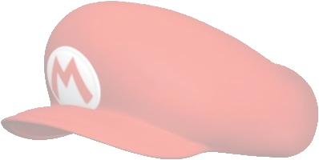

Izgled
Mario je vodoinstalater koji nosi crvenu majicu dugih rukava, plave tregerice i braon cipele. Njegov najupečatljiviji i najpoznatiji deo odeće je crvena kapa sa slovom "M" na vrhu glave. Ako Mario izgubi kapu u igricama Super Mario 64 ili Super Mario 64 DS, otkriva se da ima braon kosu. Takođe ima crne, guste brkove.
Uloga
Mario dobija pismo od princeze Peach, koja mu je ispekla tortu. Mario zatim kreće ka njenom zamku, gde otkriva da su Peach i nekoliko Toad-ova zarobljeni od strane kralja Bowsera. Da bi ih spasio, Mario mora da prođe kroz zamak, pobedi brojne neprijatelje i prikupi izgubljene Zvezde moći. Nakon što spasi Peach, ona ga nagradi poljupcem i tortom iz pisma.
Dodatne moći
|
Koopa Shell |
Metal Cap |
Wing Cap |
Vanish Cap |

|

|

|
 |